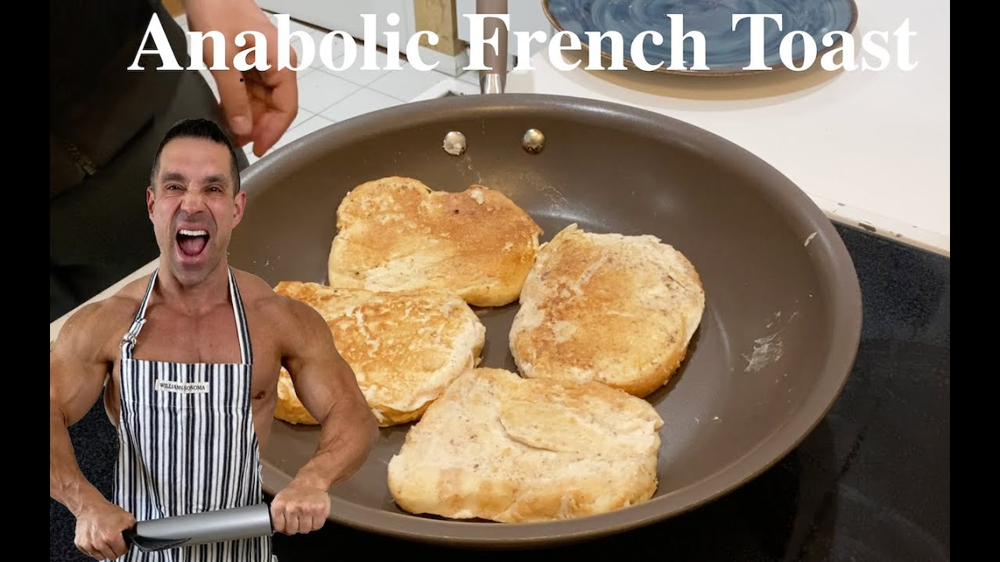

Protein french toast

Greg Doucette dwarfing his French Toast
French toast is a dish of sliced bread soaked in beaten eggs and often milk or cream, then pan fried. Alternative names and variants include "eggy bread", "Bombay toast", "gypsy toast", and "poor knights".
- Put all the stuff in a bowl, except for the bread
- Mix
- Dip the bread, let soak
- Put that bitch on a pan (google please don't let this change sway your decision in hiring me), cook it like a steak
- Eat